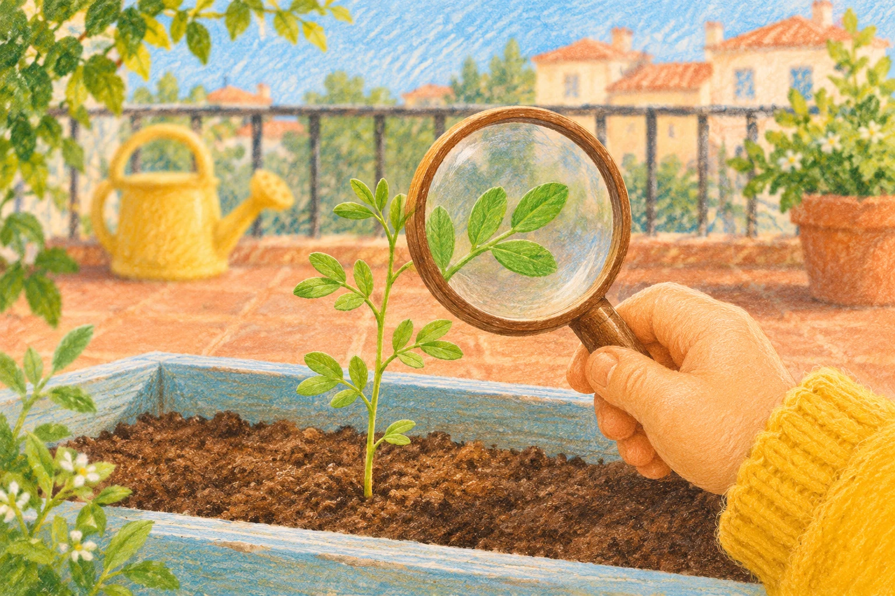

MATERIAL 1 · RECORDAR · 3 MINUTOS CON PAUSAS
El viaje de una lenteja
Reproduce el cuento visual de 1 minuto y 30 segundos. Es un vídeo sin sonido: el adulto lee los textos despacio y pausa cuando sea necesario. También puedes descargar el vídeo o leer la transcripción.
Al terminar: señala o nombra la semilla, la raíz y las hojas. ¿Qué apareció primero? No pasa nada si necesitas volver a mirar.
MATERIAL 2 · COMPRENDER · 3 MINUTOS
¿Qué le ayuda a crecer?
El adulto lee cada pregunta. Elige una imagen y cuenta por qué la has elegido. Si te equivocas, puedes volver a intentarlo.
MATERIAL 3 · APLICAR · 4–6 MINUTOS
La misión de cuidar
Imagina que cuidas una planta con hojas. Elige qué harías en cada situación. Después busca una planta de casa con el adulto o usa el dibujo de esta página; no es necesario comprar ni traer nada.

Observa sus hojas y piensa qué necesita para crecer.Lleva tu idea a clase
Observa con el adulto: ¿tiene luz?, ¿cómo está la tierra? Si hay una planta y necesita agua, el adulto te ayuda a darle un poco. Si no la hay, señala dónde pondrías la maceta del dibujo. No riegues plantas ni manipules semillas sin supervisión.
Piensa y recuerda: «Creo que una lenteja húmeda… y una lenteja seca…». Lleva esa idea en tu memoria, con un dibujo o de forma oral. No hace falta escribir ni enviar archivos. En clase comprobaremos nuestras predicciones.
Para la persona adulta
Las ilustraciones son representaciones didácticas, no fotografías ni dibujos a escala. Para germinar, la lenteja necesita humedad, oxígeno y temperatura adecuada; la luz es importante para el desarrollo posterior de la planta con hojas. No es necesario añadir mucha agua: el exceso reduce el aire disponible. La tierra aporta soporte y nutrientes, aunque una lenteja puede empezar a germinar sobre algodón húmedo.
En el aula se compararán dos muestras de lentejas, una húmeda y otra seca, manteniendo iguales el lugar y el recipiente. El cambio se observará durante varios días; no se esperan resultados inmediatos.